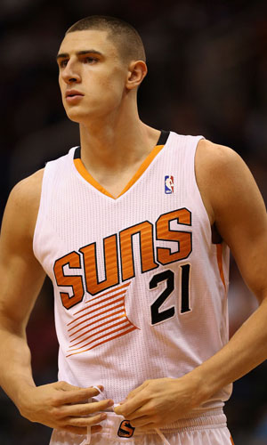

|  |
Матчи |
69 |
|
Передачи (всего/среднее) |
32 |
0.5 |
| В основе |
44 |
|
Подборы в защите (всего/среднее) |
312 |
4.5 |
| Время (всего/среднее) |
1518:01 |
22:00 |
Подборы в атаке (всего/среднее) |
142 |
2.1 |
| Очки (всего/среднее) |
432 |
6.3 |
Подборы (всего/среднее) |
454 |
6.6 |
| 2-очковые броски (всего/среднее) |
178/350 |
2.6/5.1 |
Перехваты (всего/среднее) |
34 |
0.5 |
| 2-очковые броски (% реализации) |
50.9% |
|
Потери (всего/среднее) |
74 |
1.1 |
| 3-очковые броски (всего/среднее) |
1/3 |
1/3 |
Блокшоты (всего/среднее) |
105 |
1.5 |
| 3-очковые броски (% реализации) |
33.3% |
|
Блокшоты соперника (всего/среднее) |
31 |
0.4 |
| Штрафные броски (всего/среднее) |
73/104 |
1.1/1.5 |
Фолы (всего/среднее) |
213 |
3.1 |
| Алексей Лень |
Штрафные броски (% реализации) |
70.2% |
|
Коэффициент полезности (всего/среднее) |
534 |
7.7 |